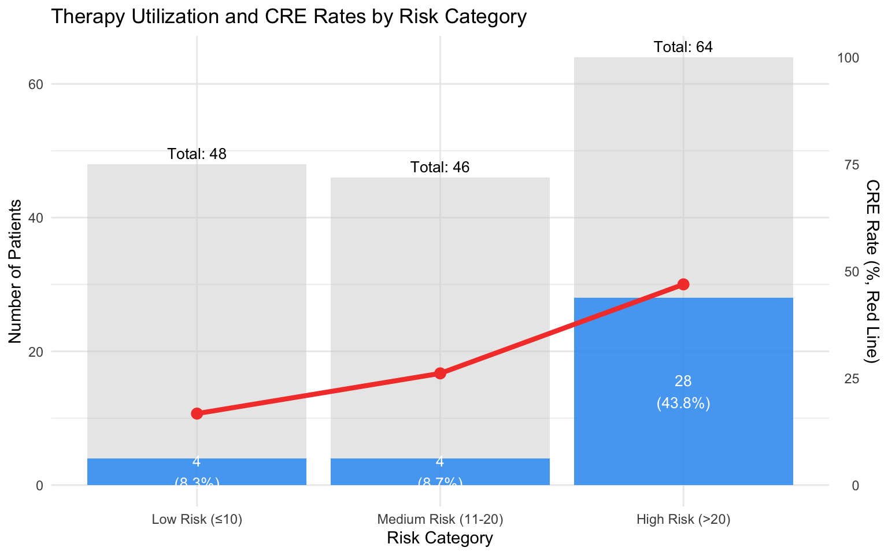
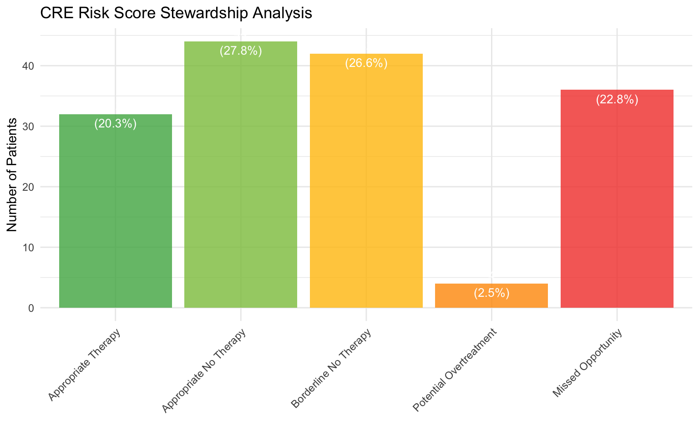
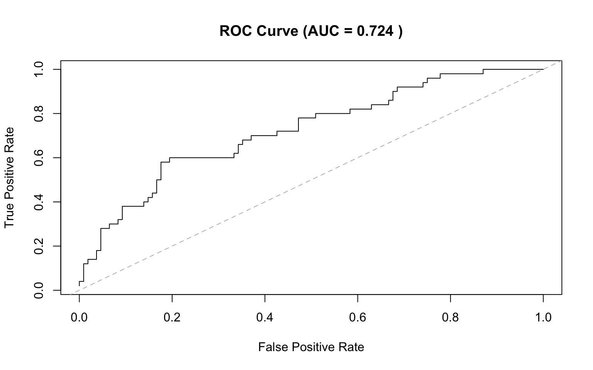
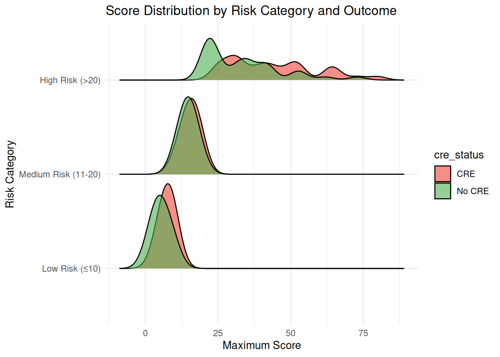
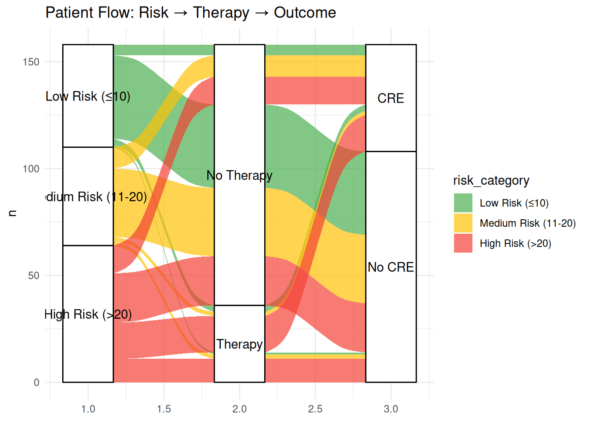
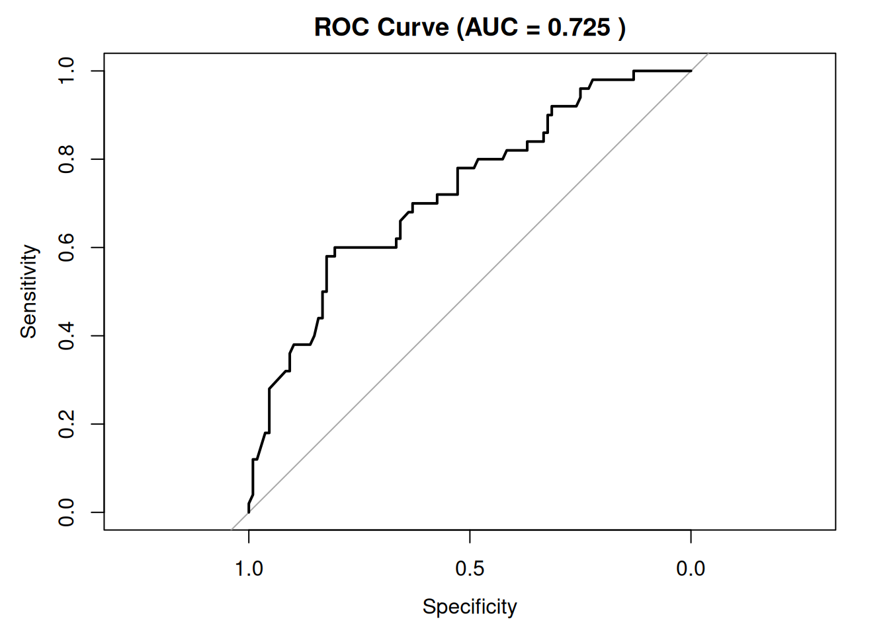
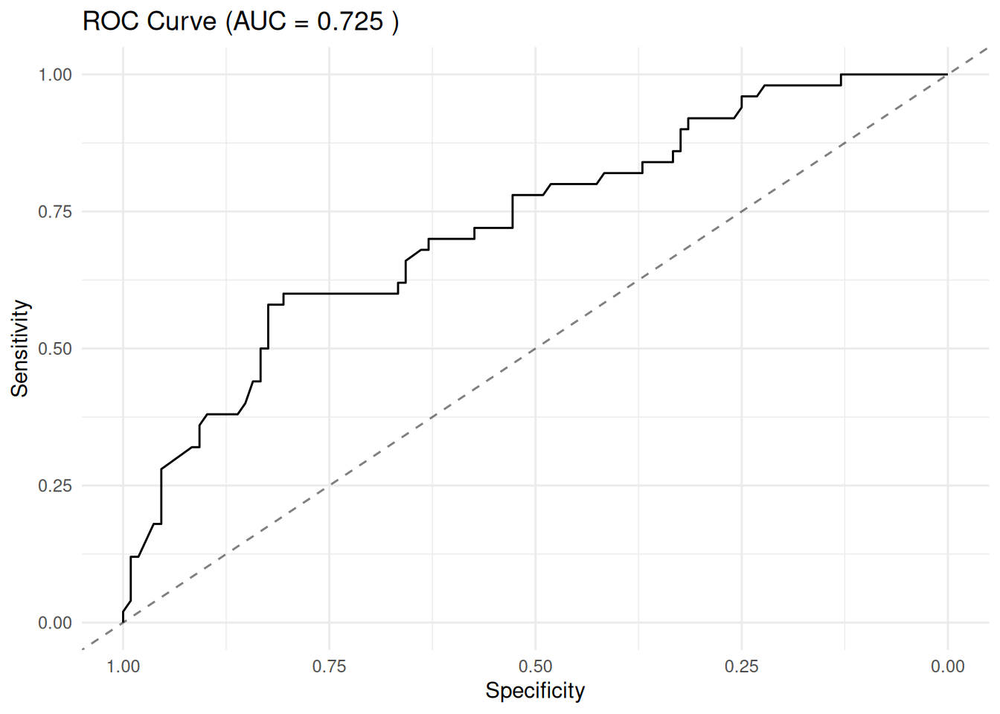
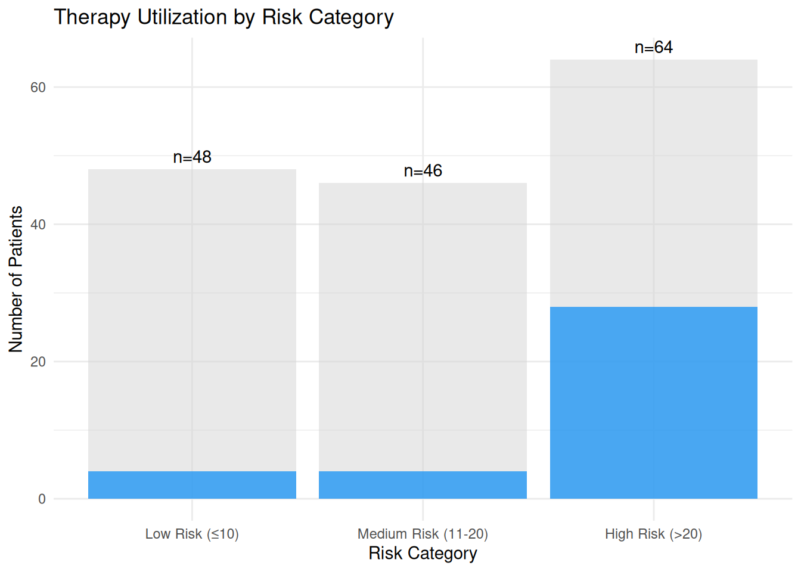
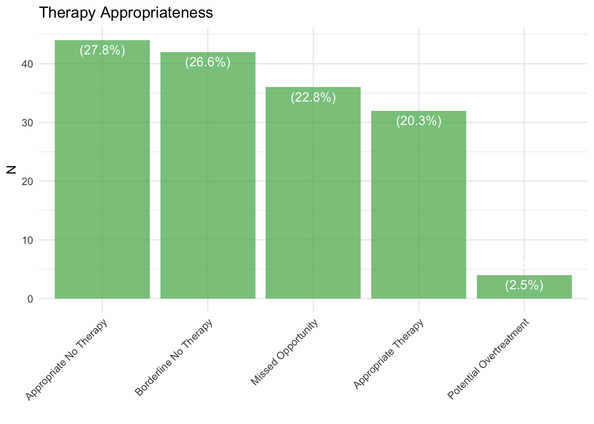

| Metric | Value |
|---|---|
| Total patients analyzed | 158 |
| Patients receiving therapy | 36 (22.8%) |
| CRE infections | 50 (31.6%) |
| Score utilization rate | 34.2% |
CRE Risk Score Stewardship Analysis
Executive Summary
Key Stewardship Findings
Potential Overtreatment
| Metric | Value |
|---|---|
| Low-risk patients receiving therapy | 4 |
| Total low-risk patients | 48 |
| % of all therapy to low-risk | 11.1% |
Missed Opportunities
| Metric | Value |
|---|---|
| High-risk patients NOT receiving therapy | 36 |
| Total high-risk patients | 64 |
| % high-risk untreated | 56.2% |
| CRE rate in untreated high-risk | 36.1% |
Therapy Allocation by Risk Category
| Risk Category | Total | Received Therapy | % Therapy | CRE Cases | CRE Rate (%) |
|---|---|---|---|---|---|
| Low Risk (≤10) | 48 | 4 | 8.3 | 8 | 16.7 |
| Medium Risk (11-20) | 46 | 4 | 8.7 | 12 | 26.1 |
| High Risk (>20) | 64 | 28 | 43.8 | 30 | 46.9 |
Visualizations

Optimal score cutpoint: 24 Sensitivity: 0.6 Specificity: 0.806


Recommendations
Based on the analysis of 158 patients:
Address High-Risk Treatment Gaps: 56.2% of high-risk patients did not receive therapy (36 patients)
Optimize Low-Risk Treatment: 11.1% of therapy went to low-risk patients
Improve Score Implementation: Only 34.2% of patients had score-driven actions
Consider Automated Protocols: Implement automatic therapy for scores >20


Loading data...Data loaded: 3170 rows x 310 columnsPatient data created: 158 patients========== ROC ANALYSIS ==========
AUC: 0.725
95% CI: 0.639 - 0.81
Optimal cutpoint (Youden): 23.8
Sensitivity: 0.6
Specificity: 0.806 
========== STEWARDSHIP METRICS ==========1. OVERTREATMENT: Low-risk with therapy: 4 / 48 % of all therapy to low-risk: 11.1 %2. UNDERTREATMENT: High-risk without therapy: 36 / 64 % high-risk untreated: 56.2 %THERAPY BY RISK CATEGORY:# A tibble: 3 × 6
risk_category n_total n_therapy pct_therapy n_cre cre_rate
<fct> <int> <int> <dbl> <int> <dbl>
1 Low Risk (≤10) 48 4 8.3 8 16.7
2 Medium Risk (11-20) 46 4 8.7 12 26.1
3 High Risk (>20) 64 28 43.8 30 46.9
APPROPRIATENESS:# A tibble: 5 × 5
appropriateness n_patients pct_total n_cre cre_rate
<chr> <int> <dbl> <int> <dbl>
1 Appropriate No Therapy 44 27.8 5 11.4
2 Appropriate Therapy 32 20.3 19 59.4
3 Borderline No Therapy 42 26.6 10 23.8
4 Missed Opportunity 36 22.8 13 36.1
5 Potential Overtreatment 4 2.5 3 75 


========== ANALYSIS COMPLETE ==========